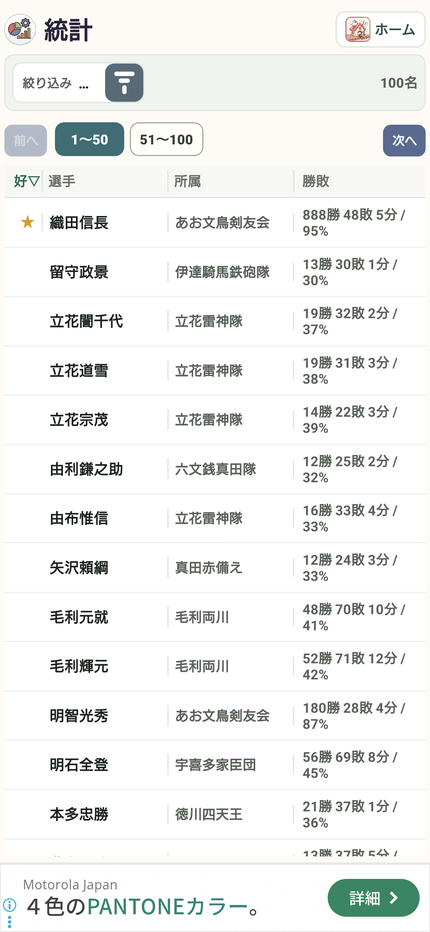

20 / 振り返る
選手ごとの成績と勝率を見る
試合が増えるほど、期間や条件で絞って振り返ると役立ちます。
操作の入口ホーム → 統計 → 選手
選手を探す
「統計」で選手・所属を確認し、対象の選手を開きます。
集計範囲を決める
期間や大会などの条件を絞り、比べたい範囲をそろえます。
勝敗と勝率を見る
勝ち・負け・引き分けを確認します。勝率は「勝ち数÷（勝ち数＋負け数）」です。
個別の試合を見返す
選手別の試合履歴で、相手やスコアを確認します。詳しく見るときは「個人統計・詳細解析」へ進みます。

